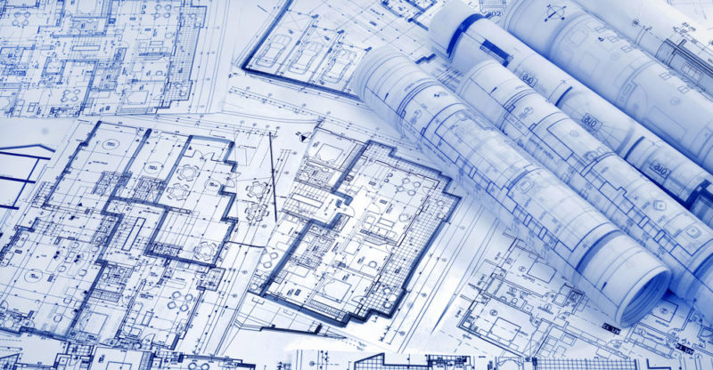

1. ¿Qué es una arquitectura?
La arquitectura es el arte y la técnica de concebir, diseñar y construir edificaciones y hábitats para las personas, tales como viviendas y espacios conmemorativos, de trabajo o de recreación. Se basa en tres principios fundamentales: belleza, firmeza y funcionalidad. El término proviene del griego antiguo y está formado por los vocablos archós (“jefe, guía”) y técton (“constructor”).
2. ¿Qué es una arquitectura de software?
Una arquitectura de software de un programa o un sistema computacional es la estructura del sistema, la cual comprende elementos de software, las propiedades externamente visibles de esos elementos, y las relaciones entre ellos.
Tipos de arquitectura de software
- Orientada a servicios (SOA): Organiza el software en servicios independientes que se comunican entre sí. Facilita la integración y mejora la eficiencia.
- Orientada a objetos (OO): Basada en encapsulación, herencia y polimorfismo. Simplifica la complejidad y fomenta la modularidad.
- Arquitectura en capas: Organiza el software en capas (presentación, lógica de negocio, datos). Mejora la mantenibilidad.
- Basada en microservicios: Divide una aplicación en servicios pequeños e independientes. Escalable y fácil de mantener.
- Cliente-servidor: Separa la aplicación en cliente (interfaz) y servidor (lógica y datos). Permite distribución de carga.
Bibliografía
- Concepto.de. (s.f.). Arquitectura – Qué es, historia, tipos y qué es urbanismo. Recuperado de https://concepto.de/arquitectura-2/
- Fernández, L. F. (2006). Arquitectura de Software. Software Guru, (02), 40–42. Recuperado de http://www.ozarate.net/articulos/- arquitectura_sw_sg_2006.pdf
- UNIR Ecuador. (2024, 26 de enero). ¿Qué es la arquitectura de software? Características y tipos. Actualidad UNIR. Recuperado de https://ecuador.unir.net/actualidad-unir/arquitectura-software/